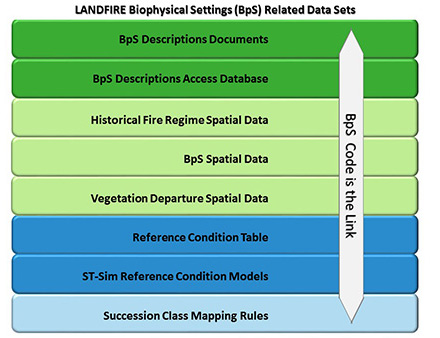

Biophysical Settings: An Overview
What you will find in this section
An overview of the Biophysical Settings concept
What Biophysical Settings products are available
Some reasons to use Biophysical Settings
How LANDFIRE Biophysical Settings products are connected
What does Biophysical Settings mean?
Biophysical Settings (BpS) are a foundational concept for LANDFIRE defined on the LANDFIRE Program website as:
“…a modeled representation of the vegetation system that may have been dominant on the landscape prior to Euro-American settlement and is based on both the current biophysical environment and an approximation of modeled past disturbance regimes.”
We like to think of the Biophysical Settings as ‘ecosystem habitats’, or ‘potential ecosystem footprints’. The BpS concept asks “where might an ecosystem occur” based on abiotic factors such as soils, surficial geology, slope and elevation as well as natural disturbance regimes.
For more information on ecological systems in LANDFIRE, see the LANDFIRE Vegetation Products Overview section of this website.
What are the BpS products?
LANDFIRE’s BpS product suite includes the BpS models and descriptions and the BpS spatial data. There are several related products derived from the core BpS products including: fire regimes, reference conditions, succession class, and vegetation departure. In addition, the BpS spatial data are sometimes used in rulesets to help map fire behavior fuel models.
Why use BpS in a current analysis?
The spatial data, state and transition models and descriptions that comprise LANDFIRE’s BpS product suite offer a dynamic perspective on ecosystem ecology and set the stage for understanding current, and potential future ecosystem trajectories.
Three quick reasons to use BpS:
BpS represent historic patterns and functions, however when used with Succession class data, current vegetation patterns can be explored. (Resource: Swaty et al., 2021)
Coupled with local knowledge, BpS descriptions and models can augment current vegetation information to understand a landscape’s potential. (Resource: Provencher. et al., 2021 - downloads a pdf)
BpS models can be modified to represent current and future scenarios given predicted changes possible under future climate scenarios. (Resource: LANDFIRE Vegetation Modeling website).
For more, watch this quick guide on Biophysical Settings on YouTube (4-minute video).
Comparing BpS with other similar concepts
There are other ecological concepts that are worth contrasting the BpS concept to including potential natural vegetation and pre-colonization vegetation. We discuss a few of them below.
Potential Natural Vegetation
PNV refers to the type of vegetation that would naturally grow in a specific area, based on the local climate.
PNVs examine vegetation that might exist without any human intervention. Various definitions deal with natural disturbances differently (i.e. ignoring or including impacts). The BpS concept explicitly includes natural disturbances prior to European colonization.
PNVs are typically static, meaning they represent one state which is often the climax state. BpS almost always includes multiple states representing a dynamic system.
Pre-colonization vegetation
These datasets rely on historical accounts, early land surveys and other methods such as sediment analysis to map ecosystems at a certain point in time. For example, land survey driven ecosystem maps often represent conditions as of ~ 1830s.
The BpSs differ in that they:
do not represent a specific point in time, rather the pre-European condition generally, and
are systems with multiple classes.
Environmental Site Potential
Environmental Site Potential (ESP) was created by LANDFIRE as a precursor to BpS data to represent the vegetation that could be supported at a given site based on the biophysical environment.
Adding in the impact of natural disturbances is how an ESP becomes a BpS. For example, in the Pacific Northwest sites that support grand fir and white fir could be classified as a Mesic Mixed Conifer ESP, but when historically frequent fire regimes are considered, these same areas are likely to be classified as Dry-Mesic Mixed Conifer BpS.
How does BpS flow through the product suite?
The process of integrating BpS into our product suite begins with the development of BpS Models and Descriptions. These models provide a foundational understanding of the ecological characteristics and the disturbance dynamics of different vegetation systems. They are used to estimate historical fire frequency and severity.
From these models, we generate Succession Class mapping rules and establish Reference Conditions (downloads a 19KB zip file) that represent the Historical Range of Variability. These reference conditions are crucial for understanding the natural variability and resilience of ecosystems.
Next, we create BpS Spatial Data, which maps the distribution of these biophysical settings across the estimated pre-European colonization landscape. Linking the BpS map to the modeled estimate of fire frequency and severity allows LANDFIRE to map historical fire regimes.
The integration of BpS spatial data, modeled BpS reference conditions, Succession Class, and existing vegetation information leads to the development of Vegetation Departure and Vegetation Condition Class metrics. These metrics help assess the current state of vegetation compared to historical conditions, providing insights into ecological health and management needs.
Additionally, the BpS spatial data contribute to the creation of the Fire Behavior and Fuels Modeling (FBFM) Ruleset.

The BpS Code serves as a crucial link connecting the various datasets within the LANDFIRE BpS framework. This interconnected framework ensures that all aspects of BpS are comprehensively analyzed and utilized, supporting effective ecological management and planning.
A note about map zones
Map zones are used in LANDFIRE to break up the landscape into geographic areas suitable for mapping, modeling, and delivering BpS products. BpS reference conditions represent the average condition for the extent of a BpS across an entire map zone.
Helpful Links
Using Biophysical Settings to explore vegetation departure. (Swaty et al., 2021)
Using BpS and local knowledge to understand a landscape’s potential. (Provencher. et al., 2021 - downloads a pdf)
Modifying BpS models to represent current and future scenarios. (LANDFIRE Vegetation Modeling website)
Quick guide on Biophysical Settings on YouTube (4-minute video)
Linking the LANDFIRE BpS models and geospatial data (pdf on Box)
Still have questions? LANDFIRE is here to help.
Ask the LANDFIRE Helpdesk (email link).
Search and subscribe to the LANDFIRE YouTube Channel (see tutorials, Office Hours, quick demonstrations).
Join an Office Hour (monthly meeting with open format Q & A with LANDFIRE experts).
Schedule a meeting (email link) with TNC’s LANDFIRE Team.